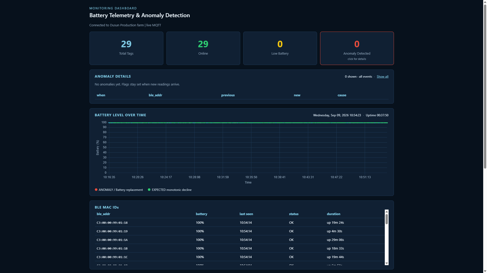
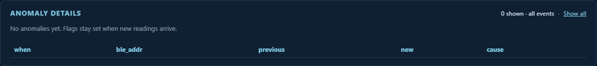
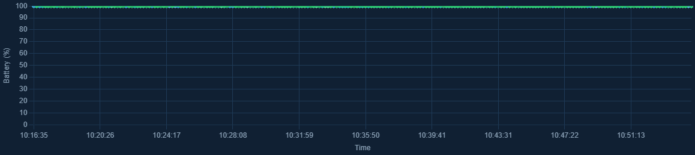
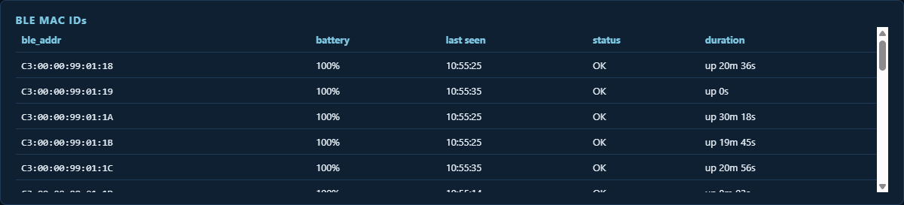
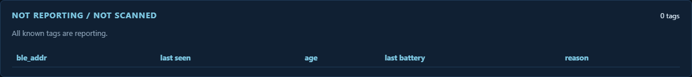
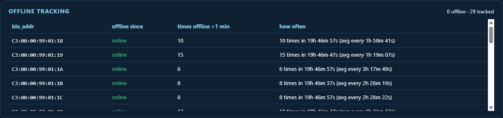
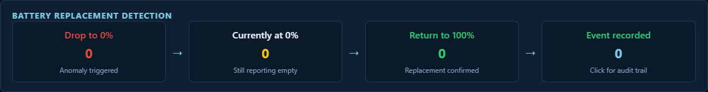

How to open the dashboard, read each section, and act on what you see.
Live screenshots from 9 September 2026 · Gateway filter 30AE7BE844CF
E9 Battery Monitoring is a live web dashboard for Contigo E9 BLE tags. It listens to MQTT battery advertisements from the Dusun production farm, keeps tags that belong to a chosen gateway (CFC id), and shows battery %, online/offline state, dropouts, and suspected battery replacements.
It does not control tags. It is a read-only monitor. Refresh is automatic (about once per second). You do not need to log in to the web page.
http://<host-ip>:8081.http://127.0.0.1:8081 also works.Use http, not https. The default port is 8081.
MQTT username and password are read from credentials.txt in the application folder. They are not entered on the web page. To change them, edit that file and restart the app.
Optional: start with a different gateway id:
./run_linux.sh 30AE7BE844CF
./run_linux.sh 30AE7BE844CF,AABBCCDDEEFF
Read the page top to bottom:
| Card | Meaning | Example from this capture |
|---|---|---|
| Total Tags | How many distinct BLE MACs have sent a valid E9 battery frame since start (plus history reloaded from logs). | 29 |
| Online | Tags heard in the last 60 seconds. | 29 (all present) |
| Low Battery | Last reading below 64%. | 0 |
| Anomaly Detected | Tags that dropped to 0%, dropped ≥30% in one sample, or jumped back to 100% (treated as a replacement). Click this card to open the detail table. | 0 — click anyway to learn the empty state |
If Online is lower than Total Tags, one or more tags have not reported for over a minute. Check the BLE MAC table and Offline tracking next.

This panel is hidden until you click Anomaly Detected. Click again (with no filter) to hide it. Show all clears a MAC or event-type filter.
| Column | What it shows |
|---|---|
| when | Local time the jump was recorded |
| ble_addr | Tag MAC |
| previous / new | Battery % before and after the jump |
| cause | Why it was flagged |
Example rows you would see when something actually happens:
| when | ble_addr | previous | new | cause |
|---|---|---|---|---|
| 2026-09-09 10:47:53 | C3:00:00:99:01:19 | 87% | 0% | Dropped from 87% to 0% |
| 2026-09-09 11:02:10 | C3:00:00:99:01:A8 | 92% | 40% | Sudden drop from 92% to 40% (≥30%) |
| 2026-09-09 14:15:00 | C3:00:00:99:01:1F | 12% | 100% | Returned to 100% from 12% (battery replacement) |

The header of this panel also shows the current clock and how long the app has been running (uptime).
batteryLevel.txt.
| Column | Meaning | Live example |
|---|---|---|
| ble_addr | Tag Bluetooth address | C3:00:00:99:01:18 |
| battery | Last parsed E9 battery % | 100% |
| last seen | Time of last battery sample (clock time, not date) | 10:55:25 |
| status | OK, Low, Offline, Anomaly, or Replacement | OK |
| duration | How long it has been up or down in the current spell | up 20m 36s |
More examples from the same session:
C3:00:00:99:01:1A — 100%, OK, up 30m 18s (longest uptime in the visible rows)C3:00:00:99:01:19 — 100%, OK, up 0s (just came back after being offline)C3:00:00:99:01:19 showed Offline and down 1m 53s when packets paused for over 60 secondsIf status is Anomaly or Replacement, the row is clickable. Click it to filter Anomaly details to that MAC.

A tag appears here when the gateway still knows it, but a fresh battery frame has not arrived in the last 60 seconds.
| Reason | Meaning | What to check |
|---|---|---|
| Can't be scanned | The tag is not in the current BLE scan list (out of range, sleeping, or RF issue). | Location, interference, tag powered? |
| Hasn't reported | The tag is scanned, but the E9 battery field did not parse. | Firmware / advertisement format, not just RF. |
Example from earlier the same day, when one tag dropped:
| ble_addr | last seen | age | last battery | reason |
|---|---|---|---|---|
C3:00:00:99:01:19 | 10:48:53 | 54s ago | 100% | Can't be scanned |

A gap only increments times offline > 1 min if the tag stays quiet for at least 60 seconds. Short blips under a minute are ignored in that counter.
| Column | Meaning | Example |
|---|---|---|
| ble_addr | Tag MAC | C3:00:00:99:01:18 |
| offline since | online or the timestamp it went down | online · or 2026-09-09 10:47:53 |
| times offline > 1 min | How many long dropouts since first seen | 10 |
| how often | Count, window, and average interval | 10 times in 19h 46m 57s (avg every 1h 58m 41s) |
Use this to find flaky tags, not just tags that are down right now.
C3:00:00:99:01:18 — online, 10 long dropouts, about every 2 hoursC3:00:00:99:01:19 — online in this capture, but 15 long dropouts, about every 1h 19m (noisier than its neighbours)This table is written to offline_tags.txt and reloaded when the app starts, so history survives a restart.

Read left to right. Click a step (except “Currently at 0%”) to open Anomaly details filtered to that event type.
| Step | Meaning | This capture |
|---|---|---|
| Drop to 0% | How many times a tag fell from a positive % to 0% | 0 |
| Currently at 0% | How many tags’ latest reading is still 0% | 0 |
| Return to 100% | How many times a tag went from below 100% back to 100% (treated as a new battery) | 0 |
| Event recorded | Total anomaly + replacement events. Click for the full audit list. | 0 |
Worked example of a real replacement sequence:
| Status | When you see it |
|---|---|
| OK | Heard in the last 60s, battery ≥ 64%, no anomaly flag |
| Low | Heard recently, battery < 64% |
| Offline | No battery sample for more than 60s |
| Anomaly | Had a drop to 0% or a ≥30% drop |
| Replacement | Had a jump back to 100% |
The top status line should stay Connected to Dusun Production farm | live MQTT. If it stays on Connecting, or the page never leaves “Loading…”, MQTT is not up (broker, network, or credentials.txt).
Files sit in the application folder (same place as main.py). Open them in Excel or a text editor. Columns are tab-separated.
| File | When it is written | What is in each line |
|---|---|---|
batteryLevel.txt | Every parsed reading below 100% | time, MAC, raw hex advertisement, battery % |
anomalyEvents.txt | Drop to 0%, sudden ≥30% drop, or return to 100% | time, MAC, previous %, new %, kind, reason, raw hex |
offline_tags.txt | Whenever online/offline state changes | MAC, offline-since or “online”, long-dropout count, how often, last seen, first seen, offline event count |
The web page itself is not a log. HTTP access is not written. MQTT passwords are not written to these files.
30AE7BE844CF).E9_WEB_HOST=0.0.0.0. Firewall may still block 8081.C3:00:00:99:01:19 dropped more often than …:18.docs/user-manual folder. Keep the images folder next to this HTML file so pictures still display.